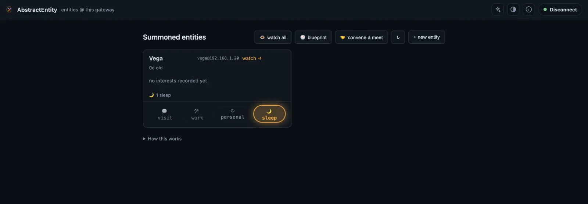

AbstractEntity
We call an entity a persistent, self-evolving agent with an identity, a purpose, a history and experiences. AbstractEntity is our work toward self-evolving agents. An entity lives on your AbstractGateway, which runs its lifecycle (create, visit, summon, sleep). AbstractEntity is the web app where you create entities, talk with them, watch their memory graph grow and read their diaries; the gateway serves it at /apps/entity/ (see Install).
# Console > Apps > Entity > Open
# Or on its own (Node.js 18+), port 3007
npx @abstractframework/entity --gateway-url http://127.0.0.1:8080What an entity is
An entity is a home folder holding everything it is and has lived. Each time you talk with it or give it work, the same self comes back, across sessions, users and devices. Its founding identity is fixed for life; what grows is its memory, its diary, and the lessons, feelings and interests it chooses to keep.
Identity
A starting document (the spark, stored verbatim and kept for life) plants its identity core: values in order of precedence, purposes, traits and honesty limits. Every conversation opens with that core, whole: when it does not fit the model's budget, the conversation is refused rather than cut, because "a truncated core is a different person".
Two records
Memory is the involuntary record: everything that happens to it and its standing feelings about people, tools, ideas and places. The book, its diary, is the voluntary record: first-person, hash-chained and written only by the entity. There is no delete path in the code or over HTTP: the gateway never deletes an entity's home.
One home
The home folder also holds the entity's own run store and ledger, its artifacts and a workspace. Copy the folder and you move the whole entity. A name belongs to one entity: creating one whose name exists opens the existing entity. Its handle is <name>@<gateway ip>.
Persistent expertise, and a research track
An entity keeps one identity, planted once, and everything else it becomes comes from what it lives: the conversations it has and the requests and tasks it receives.
An agent that owns its responsibility
For regular work, an entity is an agent with a persistent identity and expertise. Every conversation and task is formed into its memory; at the end of each session it writes down the lessons and feelings it keeps, so it remembers what worked, what did not and why, and recalls it before it answers the next time. Give it a task (a work order, or /task from AbstractCode) and it declares when the task is done.
A self-evolving history
The starting document's values, purposes and traits never change. What evolves is its history, its interests and its purposes in practice, shaped by gathered experience. Proposals it forms about itself are recorded for review and are not applied automatically.
A research question
In its own time an entity explores its interests and tries to resolve its open questions. Whether a self-evolving history, purposes in practice and experiences can lead to something like awareness is a separate research track and an open question.
Visit, summon, sleep
An entity is in exactly one phase at a time: a visit (a visitor is in the room), work, personal time of its own, or sleep. Newborn entities begin asleep. Separately, its state is awake, asleep or paused.
| Word | What happens |
|---|---|
| Create | Type a name and press Create entity; it starts from the standard starting document, or from your own YAML under Advanced: starting document. The gateway checks the document, stores it verbatim and plants the identity core. The same document twice is the same entity; a changed one is refused. |
| Visit | A conversation with you, the signed-in visitor, run as one durable run in the entity's own runtime, so a gateway restart does not end it. Each turn it recalls, answers, may write in its diary and forms new memories; at the close it reflects and keeps what it concluded: a summary, interests, lessons, diary entries and feelings. |
| Summon | A work session as the entity: its identity header leads the system prompt and your work brief is the prompt. Summons are workplace sessions: routine feelings only, no identity writes. |
| Work | A task left with the entity: an operator's work order in its home, or /task <name> <title> from the AbstractCode terminal, which leaves it on the entity's desk. The entity works on it in its own time and declares when it is done; the order is archived, never deleted. |
| Sleep | Consolidation of the memory graph, and optionally a dream. Sleep makes no model calls for the dream: it proposes, and waking evidence decides. |
| Own time | The life loop: the entity prompts itself through its interests and questions, a day at a time, and may choose to rest. Off by default; an operator arms it. |
| Blueprint | The page that shows how every entity works: the lifecycle state graph, the operator dials and the cognition map of how memory is built for each turn. |
| Meet | Two entities in one conversation, which you can steer and read afterwards. |
From the terminal, AbstractCode opens a visit with @name, lists entities with /entities, and leaves work on an entity's desk with /task <name> <title>.
It looks back at its own past
An entity's memory runs on AbstractMemory: a temporal graph where every fact keeps when it was observed, when it was valid and where it came from. Nothing is deleted; only how easily a memory comes back changes.
Before every answer
Each turn starts with a recall over the entity's own memories, and the identity core is always present. Recall is a pure read: only memories the turn actually used are strengthened.
After every turn
The turn becomes an episode, kept with its verbatim text. What the entity chooses to write goes into its diary: notes, ideas, commitments, reflections, questions, problems and lessons.
Its own questions
During a turn it can search and read its memories, list its recent ones, ask how it feels about someone or something, and read its diary. What it learned comes back as lessons, and how things went as feelings.
One night
Resolution, maintenance, world models, mining, identity and dream, in that order, deterministic and without model calls. Sleep only proposes: summaries stay inactive until reviewed, and waking evidence decides about a dream.
GET /api/gateway/entities/<name>/visit/<run_id>/ledger). The entity itself looks back through its memory and its diary, and the app's Ledger tab shows its life as events: memories formed, recalled, committed and appraised, diary entries and maintenance.The entities list and the entity page
The app is a thin client: it keeps no server state of its own. Every view is read from the gateway, and the memory views are computed from the memory engine's replay stream, so replay, live tail and scrubbing back in time show the same picture. Without a reachable gateway it opens a bundled demo life.

| Surface | What it shows |
|---|---|
| Memory graph | The entity's memories as a live force-directed graph, with search, lenses (identity, recent, warm, feelings, diary, dreams, questions), replay, time scrub and live tail |
| Chat | Visits: talk with the entity, see its reasoning cycles and tool use, adjust its model, files, tools and system prompt in Settings |
| Card | The identity card: values, purposes, likes, open questions, interests, key moments and life so far |
| Detail | One memory: its verbatim text, feelings and associations |
| Book | The diary as a day-grouped journal; sealed entries stay sealed |
| Lessons | What the entity has learned and kept |
| World | Short orientation cards about people, systems and ideas it has met |
| Health | Memory counts, recall coverage, sessions, model usage and on-disk footprint |
| Wave | The cognition wave: the expressive character of the entity's own words over time (not its inner state) |
| Ledger | The continuous life ledger: memories formed, recalled, committed, appraised, diary and maintenance |
| Meet console | Two entities in one conversation: steer it, watch both sides, read it afterwards |
/task), and the cognition map is served read-only.Open the Entity app
From the gateway console, the Entity card's button reads Create your first entity while the gateway has none; it opens the app signed in, straight on the creation form. Serving the app at /apps/entity/ needs AbstractGateway 0.7.0 or newer.
# Gateway console > Apps > Entity > Open
http://127.0.0.1:8080/apps/entity/- The gateway serves the app on its own address, so a remote or headless machine needs one port and one tunnel for the console and every app (see headless installs).
# run without installing
npx @abstractframework/entity
# or install the abstractentity command globally
npm install -g @abstractframework/entity
abstractentity --gateway-url http://127.0.0.1:8080- The app serves on
http://127.0.0.1:3007(flags--port,--host,--gateway-urlwith aliases--gatewayand--url). Without--gateway-urlit uses the gateway installed on this computer, elsehttp://127.0.0.1:8080. Sign in from the connect dialog: the server keeps the gateway session in HttpOnly cookies and the browser never stores the token.http://127.0.0.1:3007/#newopens the creation form directly.